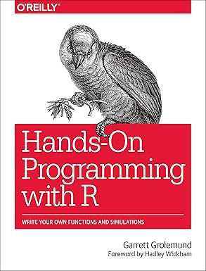
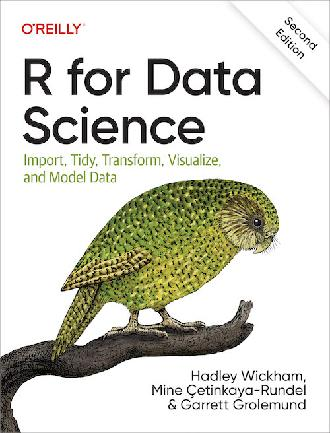
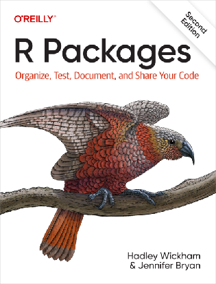
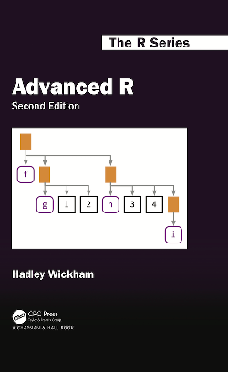

Summary¶
You can find the module to be able to run R:
You can load the module to be able to run R:
module load GCC/11.2.0 OpenMPI/4.1.1 R/4.1.2
module load GCC/11.3.0 OpenMPI/4.1.4 R/4.2.1
module load R/4.1.1
You can run the R interpreter
You can run the R command to get the list of installed R packages
You can run an R script from the command-line
You can find out if an R package is already installed
You can load the pre-installed R packages
You can install an R package from CRAN
You can install an R package from GitHub
You can manually download and install an R package
- UPPMAX-only: I can manually download and install an R package on Bianca
You can submit a job to the scheduler to run an R script with regular code
You can submit a job to the scheduler to run an R script that uses parallel code
#!/bin/bash
#SBATCH -A my_account
#SBATCH -t 00:10:00
#SBATCH -N 1
#SBATCH -c 4
R -q --slave -f my_parallel_script.R
You can submit a job to the scheduler to run an R script that uses a GPU
You can find and load the R machine learning modules
module load R/4.1.1 R_packages/4.1.1
module load GCC/11.2.0 OpenMPI/4.1.1 R/4.1.2 R-bundle-Bioconductor/3.14-R-4.1.2
module load GCC/11.3.0 OpenMPI/4.1.4 R/4.2.1 R-bundle-Bioconductor/3.15-R-4.2.1
module load GCC/11.3.0 OpenMPI/4.1.4 R/4.2.1 CUDA/12.1.1
You can submit a job to the scheduler to run an R script that uses machine learning
You can start an interactive session
You can verify I am on the login node yes/no
You can start an interactive session with multiple cores
You can verify my interactive session uses multiple cores
You can start RStudio
Where to go next?¶
- For other courses: see the SCoRe overview of courses, which collects all courses from NAISS, SciLifeLab and many more providers
- For self study: below are free and excellent books
| Cover | Book | Audience |
|---|---|---|
|  | Hands-on programming | Those that have never programmed |
|  | R for data science | Beginners |
|  | R packages | Intermediate |
|  | Advanced R | Advanced |